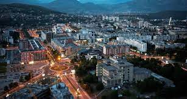
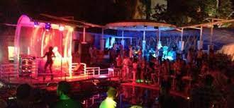
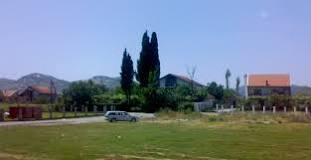

Podgorica (srednjovjekovno Ribnica, od 1946. do 1992. Titograd), glavni i najveći grad Crne Gore; 250 000st.(2016) Šire područje Podgorice obuhvata 10,4 % teritorije Crne Gore i 27,3 % njenog stanovništva. Podgorica se prije nazivala Ribnica i Titograd. Njen pogodan položaju na ušću reke Ribnice u Moraču u Zetsko-bjelopavlićkoj ravnici. Grad je blizu zimskim centrima na sjeveru zemlje i ljetovalištima na Jadranskom moru. Podgorica se nalazi blizu ostataka rimskog grada Dokleje. U srednjem vijeku ovde je postojalo naselje koje se zvalo Ribnica, a pod ovim imenom grad se prvi put spominje 1326. Podgorica je od 1878. ušla u sastav Kneževine Crne Gore. Od 1946. je administrativno sjedište Crne Gore, a za vrijeme SFRJ Podgorica se zvala Titograd.
Podgorica je raskrsnica nekoliko istorijski važnih puteva, blizu reka Zete, Morače, Cijevne, Ribnice i Sitnice, u dolini Skadarskog jezera i blizu Jadranskog mora, u plodnoj niziji sa prijatnom klimom. Najstarija ljudska naselja su iz praistorije; najstariji fizički ostaci su iz kasnog kamenog doba. U ilirskom periodu, područje Zetsko-bjelopavlićke nizije su naseljavala ilirska plemena Labeati i Dokleati. Labeati su zauzimali područje od Skadra do današnje Podgorice i sazidali su tvrđavu Medun (Meteon). Po njima su Rimljani zvali Lacus Labeatis današnje Skadarsko jezero. Dokleati su živeli u području reke Zete i zahvaljujući povoljnom geografskom i putnom položaju, ekonomski su se brzo razvijali. Po njima su Rimljani nazvali svoj municipijum Duklju (Doclea), grad oko 3 km severozapadno od današnje Podgorica, a Sloveni su kasnije istim imenom nazvali svoju prvu državu na ovim prostorima. U rimsko doba na području današnje Podgorice postojala su tri urbana centra: Alata, Birziminium i Doklea. Sa padom Rimskog carstva i dolaskom prvih slovenskih i avarskih plemena, u okolini se dešavaju mnogi krupni događaji. Vremenom su stare tvrđave izgubile svoj značaj i sagrađeni su novi gradovi. Sa naseljavanjem ovog područja, Sloveni su stvorili novu državu, prihvatili hrišćanstvo i feudalni poredak. Slovenska plemena u ovom području su bila u stalnom ratu sa Vizantijom i pokušavala su da osnuju svoju državu. Rezultat ovoga je bilo osnivanje novog naselja koje je dobilo ime Ribnica po reci na kojoj je sagrađeno. Prvi pomen Ribnice je za vreme vladavine srpske dinastije Nemanjića, pošto je rodonačelnik ove dinastije Stefan Nemanja rođen u Ribnici. Značaj Ribnice je bio u njenom značaju kao raskršća u komunikaciji za zapadom.
Andrijevo, Balabani, Baloči, Barlaj, Barutana, Begova Glavica, Bezjovo, Beri, Berislavci, Bigor, Bijelo Polje, Bioče, Bistrice, Blizna, Bolesestra, Botun, Brežine, Briđe, Brskut, Budza, Buronji, Cvilin, Crvena Paprat, Crnci, Čepurci, Ćafa, Ćemovsko polje, Ćepetići,Dolovi, Doljani, Donje Stravče, Donji Kokoti, Donji Vranići, Drač, Draževina, Dromira, Duga, Dučići, Duške, Đurđevina, Đurkovići, Đurmani, Farmaci, Fundina, Golubovci, Goljemadi, Gornja Gorica, Gornja Vrbica, Goričani, Gornje Stravče, Gornji Kokoti, Gornji Milješ, Gornji Vranići, Gostilj, Gradac, Grbavci, Grbi Do, Kiselica, Klopot, Konik, Kopilje, Kornet, Kosor, Kržanja, Kruse, Kuči, Kupine, Kurilo, Lekići, Lijeva Rijeka, Liješnje, Liješta, Lopate, Lužnica, Lutovo, Ljajkovići, Lješanska nahija, Mahala, Malo Brdo, Mataguži, Medun, Mileti, Milunovići, Milješ, Mitrovići, Mojanovići, Momče, Mosor, Mrke, Nikine Uvale, Opasanica, Orahovo, Oraovice, Orasi, Ožezi, Piperi, Parci, Pastirica, Pelev Brijeg, Petrovići, Peuta, Pobrežje, Podgorica, Ponari, Potoci, Prisoja, Progonovići, Radeća, Radovče, Raslovići, Raći, Releza, Rijeka Piperska, Sadine, Seoca, Seoštica, Sjenice, Slacko, Smokovac, Srpska, Staniselići, Stanjevića Rupa, Stara Varoš, Stari Aerodrom, Stijena, Stupovi, Šujaci, Šušunja, Tološi, Trmanje, Tuzi Ljevorečke, Ubalac, Ubli, Velje Brdo, Veruša, Vidijenje, Vilac, Vilusi, Vranići, Vranjina, Vranjske njive, Vrbica, Vukovci, Zabjelo, Zagorič, Zagreda, Zaugao i Zlatica.
  